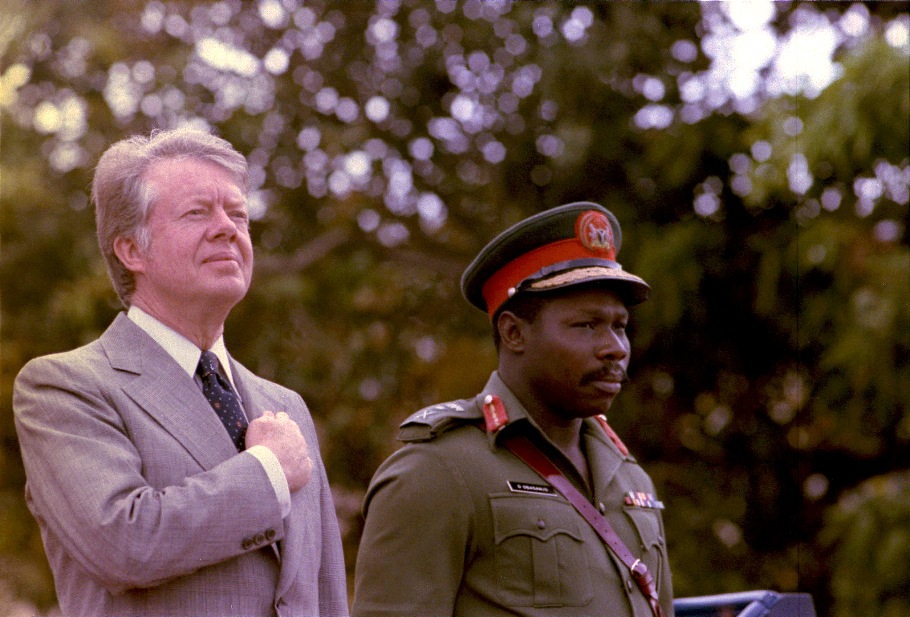
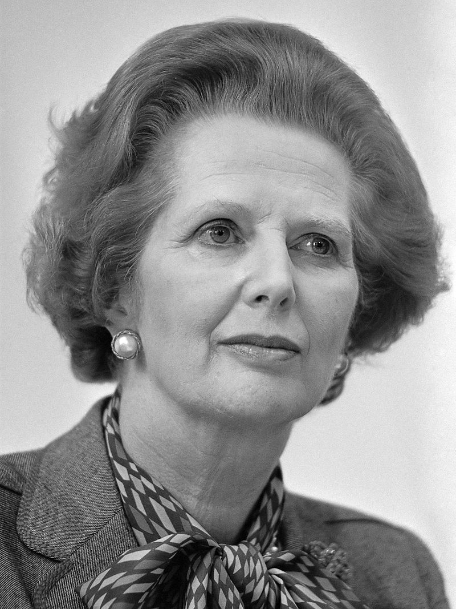
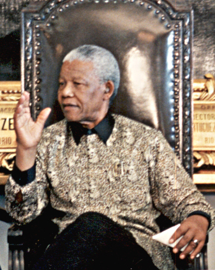
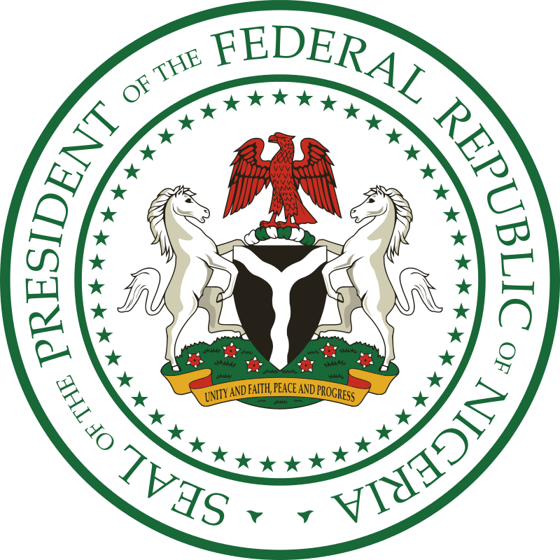
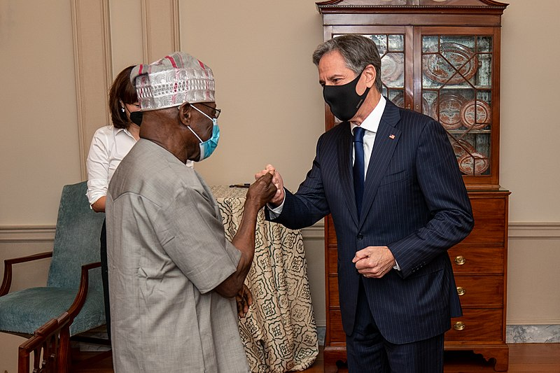
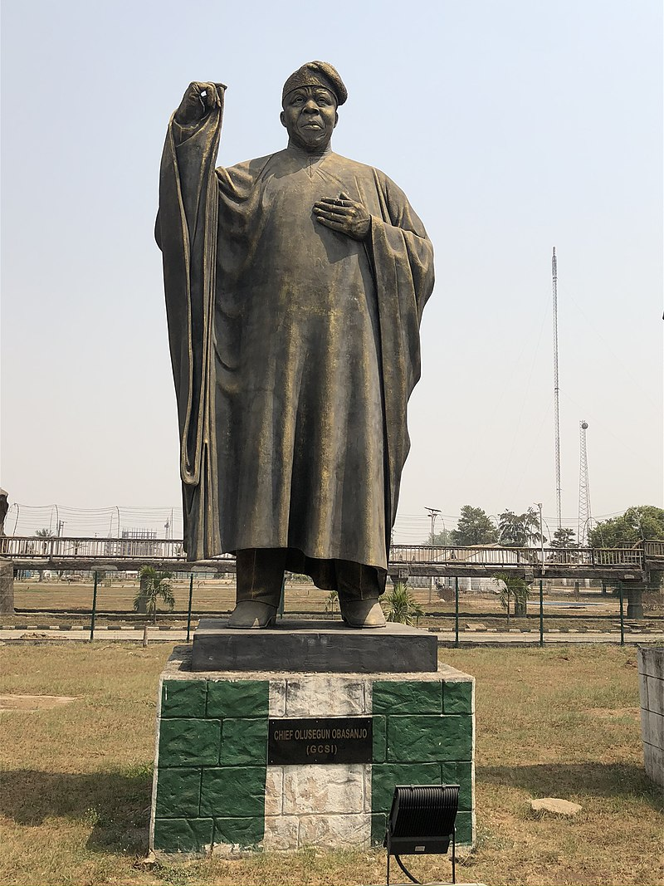

Chief Olusegun Matthew Okikiola Ogunboye Aremu Obasanjo, GCFR ,[1][2] (/oʊˈbɑːsəndʒoʊ/ (Listen); Yoruba: Olúṣẹ́gun Ọbásanjọ́ [olúʃɛ́ɡũ ɔbásanɟɔ];[3] born 5 March 1937) is a Nigerian political and military leader who served as Nigeria's head of state from 1976 to 1979 and later as its president from 1999 to 2007. Ideologically a Nigerian nationalist, he was a member of the Peoples Democratic Party (PDP) from 1999 to 2015, and from 2018 has been a member of the African Democratic Congress party (ADC).
Born in the village of Ibogun-Olaogun to a farming family of the Owu branch of the Yoruba, Obasanjo was educated largely in Abeokuta, Ogun State. Joining the Nigerian Army, where he specialised in engineering, he spent time assigned in the Congo, Britain, and India, rising to the rank of major. In the latter part of the 1960s, he played a senior role in combating Biafran separatists during the Nigerian Civil War, accepting their surrender in 1970. In 1975, a military coup established a junta with Obasanjo as part of its ruling triumvirate. After the triumvirate's leader, Murtala Muhammed, was assassinated the following year, the Supreme Military Council[4] appointed Obasanjo as head of state. Continuing Murtala's policies, Obasanjo oversaw budgetary cut-backs and an expansion in access to free school education. Increasingly aligning Nigeria with the United States, he also emphasised support for groups opposing white minority rule in southern Africa. Committed to restoring democracy, Obasanjo oversaw the 1979 election, after which he handed over control of Nigeria to the newly elected civilian president, Shehu Shagari. He then retired to Ota, Ogun, where he became a farmer, published four books, and took part in international initiatives to end various African conflicts.
In 1993, Sani Abacha seized power in a military coup. Openly critical of Abacha's administration, in 1995 Obasanjo was arrested and convicted of being part of a planned coup, despite protesting his innocence. While imprisoned, he became a born again Christian, with providentialism strongly influencing his subsequent worldview. He was released following Abacha's death in 1998. Entering electoral politics, Obasanjo became the PDP candidate for the 1999 presidential election, which he won comfortably. As president, he de-politicised the military and both expanded the police and mobilised the army to combat widespread ethnic, religious, and secessionist violence. He withdrew Nigeria's military from Sierra Leone and privatised various public enterprises to limit his country's spiralling debt. He was re-elected in the 2003 election. Influenced by Pan-Africanist ideas, he was a keen supporter of the formation of the African Union and served as its chair from 2004 to 2006. Obasanjo's attempts to change the constitution to abolish presidential term limits were unsuccessful and brought criticism. In retirement, he earned a PhD in theology from the National Open University of Nigeria.
Obasanjo has been described as one of the great figures of the second generation of post-colonial African leaders. He received praise both for overseeing Nigeria's transition to representative democracy in the 1970s and for his Pan-African efforts to encourage cooperation across the continent. Critics maintain that he was guilty of corruption, that his administrations oversaw human rights abuses, and that as president he became too interested in consolidating and maintaining his personal power.[4][5]
Matthew Olusegun Aremu Obasanjo was born in Ibogun-Olaogun, a village in southwest Nigeria.[6] His later passport gave his date of birth as 5 March 1937, although this was a later estimate, with no contemporary records surviving.[7] His father was Amos Adigun Obaluayesanjo "Obasanjo" Bankole and his mother was Bernice Ashabi Bankole.[8] The first of nine children, only he and a sister (Adunni Oluwole Obasanjo) survived childhood.[9] He was born to the Owu branch of the Yoruba people.[7] The village church was part of a mission set up by the U.S. Southern Baptist Church and Obasanjo was raised Baptist. His village also contained Muslims and his sister later converted to Islam to marry a Muslim man.[10]
Obasanjo's father was a farmer and until he was eleven years old, the boy was involved in agricultural labour.[11] Aged eleven, he joined the village primary school,[10] and after three years, in 1951, he moved on to the Baptist Day School in Abeokuta's Owu quarter.[12] In 1952 he transferred to the Baptist Boys' High School,[13] also in the town. His school fees were partly financed by state grants.[14] Obasanjo did well academically,[15] and at school became a keen Boy Scout.[16] Although there is no evidence that he was then involved in any political groups,[16] it was at secondary school that Obasanjo rejected his forename of "Matthew" as an anti-colonial act.[9] Meanwhile, Obasanjo's father had abandoned his wife and two children.[17] Falling into poverty, Obasanjo's mother had to operate in trading to survive.[16] To pay his school fees, Obasanjo worked on cocoa and kola farms, fished, collected firewood, and sold sand to builders. During the school holidays he also worked at the school, cutting the grass and other manual jobs.[18]
In 1956, Obasanjo took his secondary school exams, having borrowed money to pay for the entry fees.[19] That same year, he began courting Oluremi Akinlawon, the Owu daughter of a station master. They were engaged to be married by 1958.[20] Leaving school, he moved to Ibadan, where he took a teaching job.[19] There, he sat the entrance exam for University College Ibadan, but although he passed it he found that he could not afford the tuition fees.[19] Obasanjo then decided to pursue a career as a civil engineer, and to access this profession, in 1958 answered an advert for officer cadet training in the Nigerian Army.[21]
In March 1958, Obasanjo enlisted in the Nigerian Army.[22] He saw it as an opportunity to continue his education while earning a salary;[23] he did not immediately inform his family, fearing that his parents would object.[24] It was at this time that the Nigerian Army was being transferred to the control of the Nigerian colonial government, in preparation for an anticipated full Nigerian independence, and there were attempts afoot to get more native Nigerians into the higher ranks of its military.[24] He was then sent to a Regular Officers' Training School at Teshie in Ghana.[22] When stationed abroad, he sent letters and presents to his fiancé in Nigeria.[20] In September 1958 he was selected for six months of additional training at Mons Officer Cadet School in Aldershot, southern England. Obasanjo disliked it there, believing that it was a classist and racist institution, and found it difficult adjusting to the colder, wetter English weather.[25] It reinforced his negative opinions of the British Empire and its right to rule over its colonised subjects.[23] At Mons, he received a commission and a certificate in engineering.[26] While Obasanjo was in England, his mother died. His father then died a year later.[26]
In 1959 Obasanjo returned to Nigeria. There, he was posted to Kaduna as an infantry subaltern with the Fifth Battalion.[26] His time in Kaduna was the first time that Obasanjo lived in a Muslim-majority area.[26] It was while he was there, in October 1960, that Nigeria became an independent country.[27]
Shortly after, the Fifth Battalion were sent to the Congo as part of a United Nations peacekeeping force. There, the battalion were stationed in Kivu Province, with their headquarters at Bukavu.[27] In the Congo, Obasanjo and others were responsible for protecting civilians, including Belgian settlers, against soldiers who had mutinied against Patrice Lumumba's government.[27] In February 1961, Obasanjo was captured by the mutineers while he was evacuating Roman Catholic missionaries from a station near Bukavu. The mutineers considered executing him but were ordered to release him.[27] In May 1961, the Fifth Battalion left the Congo and returned to Nigeria.[27] During the conflict, he had been appointed a temporary captain.[23] He later noted that the time spent in the Congo strengthened the "Pan-African fervour" of his battalion.[27]
On his return, Obasanjo bought his first car,[28] and was hospitalised for a time with a stomach ulcer.[20] On his recovery, he was transferred to the Army Engineering Corps.[20] In 1962 he was stationed at the Royal College of Military Engineering in England.[29] There, he excelled and was described as "the best Commonwealth student ever".[30] That year, he paid for Akinlawon to travel to London where she could join a training course.[20] The couple married in June 1963 at the Camberwell Green Registry Office, only informing their families after the event.[30] That year, Obasanjo was ordered back to Nigeria, although his wife remained in London for three more years to finish her course.[31] Once in Nigeria, Obasanjo took command of the Field Engineering Squadron based at Kaduna.[32] Within the military, Obasanjo steadily progressed through the ranks, becoming a major in 1965.[20] He used his earning to purchase land, in the early 1960s obtaining property in Ibadan, Kaduna, and Lagos.[33] In 1965, Obasanjo was sent to India. En route, he visited his wife in London.[34] In India, he studied at the Defence Services Staff College in Wellington and then the School of Engineering in Poona.[34] Obasanjo was appalled at the starvation that he witnessed in India although took an interest in the country's culture, something that encouraged him to read books on comparative religion.[34]
Obasanjo flew back to Nigeria in January 1966 to find the country in the midst of a military coup led by Major Emmanuel Ifeajuna.[35] Almost all of those involved in organising the coup were from the Igbo people of southern Nigeria.[36] Obasanjo was among those warning that the situation could descend into civil war.[36] He offered to serve as an intermediary between the coup plotters and the civilian government, which had transferred power to the military Commander-in-Chief Johnson Aguiyi-Ironsi.[36] As the coup failed, Olusegun met Ironsi in Lagos.[36] Ironsi soon ended federalism in Nigeria through his unification decree in May 1966, something which inflamed ethnic tensions.[37] In late July, a second coup took place. In Ibadan, troops of northern Nigerian origin rebelled and killed Ironsi, also massacring around two hundred Igbo soldiers. General Yakubu Gowon took power.[38]
While this coup was taking place, Obasanjo was in Maiduguri. Hearing of it, he quickly returned to Kaduna. There, he found that northern troops from the Third Battalion were rounding up, torturing, and killing Igbo soldiers.[38] The Governor of Northern Nigeria, Hassan Katsina, recognised that although Olusegun was not Igbo, as a southerner he was still in danger from the mutinous troops. To protect them, Katsina sent Olusegun and his wife back to Maiduguri for ten days, while the violence abated.[38] After this, Obasanjo sent his wife to Lagos while returning to Kaduna himself, where he remained until January 1967.[38] At this point he was the most senior Yoruba officer present in the north.[38]
In January 1967, Obasanjo was posted to Lagos as the Chief Army Engineer.[39] Tensions between the Igbo and northern ethnic groups continued to grow, and in May the Igbo military officer C. Odumegwu Ojukwu declared the independence of Igbo-majority areas in the southeast, forming the Republic of Biafra.[40] On 3 July, Nigeria's government posted Obasanjo to Ibadan to serve as commander of the Western State.[41] The fighting between the Nigerian Army and the Biafran separatists broke out on 6 July.[42] On 9 July, Ojukwu sent a column of Biafran troops over the Niger Bridge in an attempt to seize the Mid-West, a position from which it could attack Lagos. Obasanjo sought to block the roads leading to the city.[43] The Yoruba commander Victor Banjo, who was leading the Biafran attack force, tried to convince Obasanjo to let them through, but he declined.[44]
Obasanjo was then appointed the rear commander of Murtala Muhammed's Second Division, which was operating in the Mid-West. Based at Ibadan, Obasanjo was responsible for ensuring that the Second Division was kept supplied.[45] In the city, Obasanjo taught a course in military science at the University of Ibadan and built his contacts in the Yoruba elite.[45] During the war, there was popular unrest in the Western State, and to avoid responsibility for these issues, Obasanjo resigned from the Western State Executive Council.[46] While Obasanjo was away from Ibadan in November 1968, armed villagers mobilised by the farmers' Agbekoya Association attacked the Ibadan City Hall. Troops retaliated, killing ten of the rioters. When Obasanjo returned he ordered a court of inquiry into the events.[46]
Gowon decide to replace Colonel Benjamin Adekunle, who was leading the attack on Biafra, but needed another senior Yoruba. He chose Obasanjo, despite the latter's lack of combat experience.[47] Obasanjo arrived at Port Harcourt to take up the new position on 16 May 1969; he was now in charge of between 35,000 and 40,000 troops.[48] He spent his first six weeks repelling a Biafran attack on Aba.[48] He toured every part of the front, and was wounded while doing so. These actions earned him a reputation for courage among his men.[48] In December, Obasanjo launched Operation Finishing Touch, ordering his troops to advance towards Umuahia, which they took on Christmas Day. This cut Biafra in half.[49] On 7 January 1970 he then launched Operation Tail-Wind, capturing the Uli airstrip on 12 January. At this, the Biafran leaders agreed to surrender.[49]
On 13 January, Obasanjo met with Biafran military commander Philip Effiong.[50] Obasanjo insisted that Biafran troops surrender their arms and that a selection of the breakaway state's leaders go to Lagos and formally surrender to Gowon.[51] The next day, Obasanjo spoke on regional radio, urging citizens to stay in their homes and guaranteeing their safety.[51] Many Biafrans and foreign media sources feared that the Nigerian Army would commit widespread atrocities against the defeated population, although Obasanjo was keen to prevent this. He ordered his troops in the region to remain within their barracks, maintain that the local police should take responsibility for law and order.[51] The Third Division, which was more isolated, did carry out reprisal attacks on the local population. Obasanjo was tough on the perpetrators, having those guilty of looting flogged and those guilty of rape shot.[51] Gowon's government made Obasanjo responsible for reintegrating Biafra into Nigeria, in which position he earned respect for emphasising magnanimity.[52] As an engineer, he emphasised restoration of the water supply; by May 1970 all major towns in the region were reconnected to the water supply.[52] Obasanjo's role in ending the war made him a war hero and a nationally known figure in Nigeria.[53]
In June 1970, Obasanjo returned to Abeokuta, where crowds welcomed him as a returning hero.[54] He was then posted to Lagos as the Brigadier commanding the Corps of Engineers.[33] In October, Gowon announced that the military government would transfer authority to a civilian administration in 1976.[55] In the meantime, a ban on political parties remained in forces; Gowon made little progress towards establishing a civilian government.[56] Under the military government, Obasanjo sat on the decommissioning committee which recommended dramatic reductions of troop numbers in the Nigerian Army over the course of the 1970s.[55] In 1974 Obasanjo went to the UK for a course at the Royal College of Defence Studies.[57] On returning, in January 1975 Gowon appointed him as the Commissioner for Works and Housing, a position he held for seven months, during which he was largely responsible for building military barracks.[58]
In 1970, Obasanjo bought a former Lebanese company in Ibadan, employing an agent to manage it.[33] In 1973 he registered a business, Temperance Enterprises Limited, through which he could embark on commercial ventures after retiring from the military.[56] He also continued to invest in property; by 1974 he owned two houses in Lagos and one each in Ibadan and Abeokuta.[33] Rumours arose that Obasanjo engaged in the corruption that was becoming increasingly widespread in Nigeria, although no hard evidence of this ever emerged.[59] His marriage with Oluremi became strained as she opposed his relationships with other women. In the mid-1970s their marriage was dissolved.[60] In 1976 he married Stella Abebe in a traditional Yoruba ceremony.[61]
In July 1975, a coup led by Shehu Musa Yar'Adua and Joseph Garba ousted Gowon,[62] who fled to Britain.[63] They had not informed Obasanjo of their plans as he was known to be critical of coups as an instrument of regime change.[64] The coup plotters wanted to replace Gowon's autocratic rule with a triumvirate of three brigadiers whose decisions could be vetoed by a Supreme Military Council. For this triumvirate, they convinced General Murtala Muhammed to become head of state, with Obasanjo as his second-in-command, and Danjuma as the third.[65] Iliffe noted that of the triumvirate, Obasanjo was "the work-horse and the brains" and was the most eager for a return to civilian rule.[66] Together, the triumvirate introduced austerity measures to stem inflation, established a Corrupt Practices Investigation Bureau, replaced all military governors with new officers who reported directly to Obasanjo as Chief of Staff, and launched "Operation Deadwood" through which they fired 11,000 officials from the civil service.[66]
In October 1975, the government announced plans for an election which would result in civilian rule in October 1979.[67] It also declared plans to create a committee to draft a new constitution, with Obasanjo largely responsible for selecting the 49 committee members.[68] On the recommendation of the Irifeke Commission, the government also announced the creation of seven new states;[69] at Obasanjo's insistence, Abeokuta was to become the capital of one of these new states, Ogun.[70] Also on the commission's recommendation, it announced gradual plans to move the Nigerian capital from Lagos to the more central Abuja.[71] In January 1976, both Obasanjo and Danjuma were promoted to the ranks of Lieutenant General.[72]
Both Murtala and Obasanjo were committed to ending ongoing European colonialism and white minority rule in southern Africa, a cause reflected in their foreign policy choices.[73] This cause increasingly became a preoccupation for Obasanjo.[74] After Angola secured independence from Portugal, a civil war broke out in the country. Nigeria recognised the legitimacy of the government declared by the MPLA, a Marxist group backed by the Soviet Union, because the rival FNLA and UNITA were being assisted by the white minority government in South Africa.[75] As well as providing material aid to the MPLA,[76] Nigeria began lobbying other African countries to also recognise the MPLA administration, and by early 1976 most states in the Organisation of African Unity (OAU) had done so.[74] In February 1976, Obasanjo led a Nigerian delegation to an MPLA anniversary celebration in Luanda, where he declared: "This is a symbolic date, marking the beginning of the final struggle against colonialism, imperialism and racism in Africa."[74]
In February 1976, Colonel Buka Suka Dimka launched a coup against Nigeria's government, during which General Murtala Muhammed was assassinated. An attempt was also made on Obasanjo's life, but the wrong individual was killed.[77] Dimka lacked widespread support among the military and his coup failed, forcing him to flee.[72] Obasanjo did not attend Murtala's funeral in Kano, but declared that the government would finance construction of a mosque on the burial site.[78]
After the assassination, Obasanjo attended a meeting of the Supreme Military Council. He expressed his desire to resign from government, but the Council successfully urged him to replace Murtala as head of state.[79] He therefore became the council's chair.[80] Concerned about further attempts on his life, Obasanjo moved into the Dodan Barracks,[81] while 39 people accused of being part of Dimka's coup were executed, generating accusations that Obasanjo's response was excessive.[82] As head of state, Obasanjo vowed to continue Murtala's policies.[83]
Aware of the danger of alienating northern Nigerians, Obasanjo brought General Shehu Yar'Adua as his replacement and second-in-command as Chief of Staff, Supreme Headquarters completing the military triumvirate, with Obasanjo as head of state and General Theophilus Danjuma as Chief of Army Staff, the three went on to re-establish control over the military regime. Obasanjo encouraged debate and consensus among the Supreme Military Council.[80] Many wondered why Obasanjo — as a Yoruba and a Christian — had appointed Yar'Adua, a member of the northern u, as his second-in-command, rather than a fellow Yoruba Christian.[84]
Obasanjo emphasised national concerns over those of the regions;[85] he encouraged both children and adults to recite the new national pledge and the national anthem.[86] Interested in getting a broader range of perspectives,[87] each Saturday he held an informal seminar on a topical issue to which people other than politicians and civil servants were invited.[80] Among those whose advice he sought were Islamic scholars and traditional chiefs.[85]
By the mid-1970s, Nigeria had an overheated economy with a 34% inflation rate.[88] To deal with Nigeria's economic problems, Obasanjo pursued austerity measures to reduce public expenditure.[89] In his 1976 budget, Obasanjo proposed to reduce government expenditure by a sixth, curtailing prestige projects while spending more on education, health, housing, and agriculture.[90] He also set up an anti-inflation task force, and within a year of Obasanjo taking office, inflation had fallen to 30%.[89] Obasanjo was generally adverse to borrowing money, but with the support of the World Bank and International Monetary Fund Nigeria took out a $1 billion loan from a syndicate of banks. Leftist critics argued that doing so left the country subservient to Western capitalism.[91] In the subsequent two years of Obasanjo's government, Nigeria borrowed a further $4,983 million.[92]
Nigeria was undergoing nearly 3% annual population growth during the 1970s, something which would double the country's population in just over 25 years.[93] Obasanjo later noted that he was unaware of this at the time, with his government having no policy on population control.[93] Nigeria's population growth contributed to rapid urbanisation and an urban housing shortage. To deal with this, Obasanjo's 1976 budget outlined plans for the construction of 200,000 new housing units by 1980, although ultimately only 28,500 were built.[93] In 1976 Obasanjo's government also announced rent and price controls.[90] To counteract the disruption of labour strikes, in 1976 Obasanjo's government introduced legislation that defined most major industries as essential services, banned strikes within them, and authorised the detention of disruptive union leaders.[94] In 1978 it merged 42 unions into the single Nigerian Labour Congress.[94]
Obasanjo continued with three major irrigation schemes in northern Nigeria that were first announced under Murtala: the Kano River Project, the Bakalori Scheme, and the South Chad Irrigation Project.[95] His government also continued the Agricultural Development Projects launched in Funtua, Gusau, and Gombe.[95] Some reforestation projects were also initiated to stall the encroachment of the Sahara Desert in the north.[96] To meet the country's growing demand for electricity, Obasanjo oversaw the launch of two new hydroelectric projects and a thermal plant.[97] The oil industry remained an important part of Nigeria's economy and under Obasanjo the Ministry of Petroleum Resources was merged with the Nigerian National Oil Corporation to form the Nigerian National Petroleum Corporation (NNPC).[98] Obasanjo also supported the creation of a liquefaction plant at Bonny, which was 62% financed by the NNPC; the project was abandoned by his successor amid spiralling cost increases.[99] Obasanjo also continued the planning of the Ajaokuta integrated steel mill, an inherited project that many critics in the civil service argued was unviable.[100]
In the mid-1970s Nigeria also faced declining agricultural production,[101] a process caused by successive governments finding it cheaper to import food than grow it domestically.[96] In May 1976, Obasanjo launched Operation Feed the Nation, a project to revitalise small-scale farming and which involved students being paid to farm during the holidays.[102] The project also involved abolishing duties on livestock feed and farm implements, subsidizing the use of fertilisers, and easing agricultural credit.[96] In March 1978 Obasanjo issued the Land Use Decree which gave the state propriety rights over all land. This was designed to stop land hoarding and land speculation, and brought praise from the Nigerian left although was disliked by many land-owning families.[103] Obasanjo saw it as one of his government's main achievements.[104]
Obasanjo continued the push for universal primary education in Nigeria, a policy inherited from Gowon.[105] He introduced the Primary Education Act in 1976;[89] between 1975–76 and 1979–80, enrolment in free but voluntary primary schooling grew from 6 million to 12.5 million, although there was a shortage of teachers and materials to cope with the demand.[105] In the 1977–78 school year, Obasanjo introduced free secondary educational in technical subjects, something extended to all secondary schooling in 1979–80.[106]
Concomitantly, Nigeria cut back on university funding; in 1978 it ceased issuing student loans and trebled university food and accommodation charges.[106] Student protests erupted in several cities, resulting in fatal shootings in Lagos and Zaria. In response to the unrest, Obasanjo closed several universities, banned political activity on campus, and proscribed the National Union of Nigerian Students.[106] The severity of these measures was perhaps due to suspicions that the student unrest was linked to a planned military coup that was uncovered in February 1978.[106] Obasanjo was frustrated at the protesting student's behaviour, arguing that it reflected a turn away from traditional values such as respect for elders.[106]
As a consequence of Nigeria's state-directed development, the country saw a rapid growth in the public sector.[105] Evidence emerged of extensive corruption in the country's government, and while accusations were often made against Obasanjo himself, no hard evidence was produced.[94] To hinder the image of corruption in the government, Obasanjo's administration banned the use of Mercedes cars as government transport and instead introduced more modest Peugeot 504s.[107] The import of champagne was also banned.[107] Pushing for cut-backs in the military, Obasanjo's government saw 12,000 soldiers demobilised over the course of 1976 and 1977.[107] These troops went through new rehabilitation centres to assist them in adjusting to civilian life.[107]
Obasanjo was also accused of being responsible for political repression. In one famous instance, the compound of the Nigerian musician and political activist Fela Kuti, Kalakuta Republic, was raided and burned to the ground after a member of his entourage was involved in an altercation with military personnel. Fela and his family were beaten and raped and his aged mother, the political activist and founding mother Chief Funmilayo Ransome Kuti, was thrown from a window. This resulted in serious injuries, and eventually led to her death. Fela subsequently carried a coffin to the then presidential residence at Dodan barracks in Lagos as a protest against the government's political repression.[108]
Obasanjo was eager to establish Nigeria as a prominent leader in Africa and under his tenure its influence in the continent increased.[109] He revived Gowon's plan to hold the second World Black and African Festival of Arts and Culture in Nigeria; it took place in Lagos in February 1977, although domestic critics argued that it was too expensive.[110] Obasanjo gave low priority to the Economic Community of West African States (ECOWAS) and angered many of its Francophone members after insisting that, as the largest financial contributor to the organisation, Nigeria should host the organisation's headquarters in Lagos.[110] Relations with nearby Ghana also declined; in 1979, Nigeria cut off oil supplies to the country to protest the execution of political opponents by Jerry Rawlings' new military junta.[111]
Under Obasanjo, Nigeria loosened its longstanding ties with the United Kingdom and aligned more closely with the United States.[112] Obasanjo was favourable to the U.S. government of Jimmy Carter, who was elected in 1976, because of Carter's commitment to ensuring majority rule across southern Africa.[113] Carter's ambassador to Nigeria, Andrew Young, formed a close personal friendship with Obasanjo,[114] while Carter visited Nigeria in 1978.[76] However, the decision to shift allegiances was made for pragmatic rather than ideological reasons;[112] the discovery of oil in the North Sea meant that the UK had become a competitor rather than a customer of Nigerian oil.[110] Obasanjo's government was also angry that the UK refused to extradite Gowon and suspected that the British government might have been involved in the coup against Murtala. For these reasons, in 1976 it considered suspending diplomatic relations with the UK, but ultimately did not.[112] Obasanjo nevertheless refused to visit the UK and discouraged his officials from doing so.[112] Relations were further damaged when Margaret Thatcher became British Prime Minister in 1979, initiating a warmer British approach to the white minority administrations of Rhodesia and South Africa.[115] In response, Nigeria seized a British tanker that was believed to be transporting Nigerian oil to South Africa, banned British firms from competing for Nigerian contracts,[116] and nationalised British Petroleum's Nigerian operations.[117]
Obasanjo was also eager to hasten the end of white minority rule in southern Africa;[109] according to Iliffe, this became "the centrepiece of his foreign policy".[110] Nigeria gave grants to those fighting white minority rule in the region, allowed these groups to open offices in Lagos, and offered sanctuary to various refugees fleeing the governments of southern Africa.[118] Taking a hard line against the apartheid regime in South Africa, Obasanjo announced that Nigeria would not take part in the 1976 Summer Olympics because New Zealand, which was competing, had sporting ties with South Africa, a country that was banned from competing due to apartheid.[119] In 1977, Obasanjo barred any contractors with South African links from operating in Nigeria; the main companies that were hit were British Petroleum and Barclays Bank.[120] That same year, Nigeria hosted the United Nations Conference for Action Against Apartheid in Lagos,[121] while Obasanjo visited the U.S. in October where he urged the country to stop selling arms to South Africa.[122] While in the country he addressed the United Nations General Assembly and two weeks later Nigeria received a seat on the United Nations Security Council.[122]
Opposition to white minority rule in Rhodesia had sparked the Rhodesian Bush War and Obasanjo's government maintained that armed struggle was the only option for overthrowing Rhodesia's government. He encouraged unity among the various anti-government factions there,[123] urging Robert Mugabe, the head of ZANU, to accept the leadership of his rival, Joshua Nkomo of ZAPU.[116] In 1977, the UK and US drew up proposals for a transition to majority rule in Rhodesia, amid a period in which the country would be under the management of United Nations forces. Obasanjo backed the plan, and visited Tanzania, Zambia, Mozambique, and the Democratic Republic of Congo to urge their governments to do the same.[124] However, after Thatcher became UK Prime Minister, Nigeria distanced itself from British efforts to end the Rhodesian Bush War and was excluded from any significant role in the UK-brokered process that led to multi-racial democratic elections in Rhodesia.[125]
As head of state, Obasanjo attended OAU summits. At that held in July 1977, he proposed the formation of a standing committee to mediate disputes between OAU member states.[111] At the 1978 conference, he warned of interference from both sides in the Cold War.[111] At the next conference, he urged the formation of a Pan-African military which could engage in peace-keeping efforts on the continent.[111] To promote Nigeria's role internationally, Obasanjo involved himself in various mediation efforts across Africa. In 1977 he persuaded Benin and Togo to end their border dispute and reopen their frontier.[126] He also attempted to mediate a quarrel among several East African states and thus prevent the collapse of the East African Community, but failed in this attempt.[126] As the chair of the OAU mediation committee, he tried to mediate the Ogaden dispute between Ethiopia and Somalia but was again unsuccessful.[126] He also failed to mend the breach that had emerged between Angola and the Democratic Republic of Congo.[126]
On behalf of the OAU, Obasanjo held a conference at Kano to mediate the Chadian Civil War. Several factions agreed to a ceasefire, to form a government of national unity, and to allow Nigerian troops to act as peacekeepers. The war nevertheless continued and Nigeria responded by cutting off its oil supply to Chad.[127] A second conference on the conflict took place in Lagos in August 1979, resulting in the formation of another short-lived transitional government.[111] In the final year of his military government, he headed an OAU mission to resolve the conflict
The military government has assembled a constituent drafting committee to devise a new constitution which could be used amid a transfer to civilian rule. The committee argued that Nigeria should change its governance system, which was based on the British parliamentary system, to one based on the U.S. presidential system whereby a single elected president would be both head of state and head of government.[128] To avoid this president becoming a dictator, as had happened elsewhere in Africa, it argued for various checks on their power, including a federal structure whereby independent elected institutions would exist at the federal, state, and local level.[10] The draft constitution was published in October 1976 and debated in public for the following year.[129] A constituent assembly met to discuss the draft in October 1977.[130] The assembly deadlocked over what role to give sharia law in the constitution.[131] Obasanjo called the assembly together and warned them of the social impact of their decision, urging them to take a more conciliatory attitude.[132] In September 1978, the Supreme Military Council announced the new constitution; it had made several amendments to the version put forward by the constituent assembly.[133]
Along with the new constitution, Obasanjo lifted the ban on political parties.[133] A variety of groups then formed to compete in the ensuing election, most notably the Unity Party of Yoruba, the Nigerian People's Party, and the National Party of Nigeria.[133] Obasanjo was angered that many of the politicians were making promises that they could not keep.[134] The elections took place over the course of July and August 1979. Turnout was low, at between 30 and 40 percent of legally registered voters, and there was rigging on various sides, although it was peaceful.[135] There was debate as to who won the presidential vote, and Obasanjo refused to adjudicate, insisting that the Electoral Commission take on that role.[135] They declared that Shehu Shagari was the winner, something that the runner up, Obafemi Awolowo, unsuccessfully challenged at the Supreme Court.[135] Shagari took office in October 1979; at his inauguration ceremony, Obasanjo presented Shagari with a copy of the new constitution.[136][137] This marked the start of Nigeria's Second Republic.[107]
Obasanjo's role in returning Nigeria to civilian rule would form the basis of the good reputation he retained for the next two decades.[128] However, various domestic and foreign individuals, including the Zambian President Kenneth Kaunda and Togo President Gnassingbé Eyadéma, urged him to remain in power.[138] His refusal to back Awolowo, a fellow Yoruba, earned him the enmity of much of the Yoruba elite. Awolowo accused Obasanjo of orchestrating Shagari's victory, something Obasanjo strenuously denied.[139]
Before he left office, in April 1979, Obasanjo promoted himself to the role of general;[138] as a four-star general he continued to receive a salary from the state.[140] Having left office in October, he returned to Abeokuta.[138] Following a six-week course at an agricultural training college,[140] Obasanjo then set himself up as a farmer, hoping to set an example in encouraging agricultural self-reliance.[141] He obtained at least 230 hectares of land in Ota on which to establish his farm, there moving in to a brick farmhouse.[142] There was local hostility to his obtaining so much land, and much litigation was brought against him because of it.[143] His agricultural activities were organised through his Temperance Enterprises Limited, later renamed Obasanjo's Farms Limited.[140] He devoted particular attention to poultry farming;[140] by the mid-1980s, his farm was hatching 140,000 chicks a week.[144] He developed farms elsewhere in Yorubaland, and by 1987 he employed over 400 workers at eight locations.[140] As did other senior Yoruba figures, Obasanjo sponsored poor students who attended his former school in Abeokuta.[145]
Obasanjo grew critical of Shagari's civilian government, deeming the president weak and ill-prepared.[145] Nigeria entered economic recession due to fluctuations in global oil prices.[146] In May 1983, senior military figures asked Obasanjo to take over control in the country again, but he declined.[147] In December, they overthrew Shagari without Obasanjo's involvement, in a coup that saw little violence.[147] Muhammadu Buhari became the new military head of state.[148] Obasanjo was initially supportive of Buhari's government, stating that representative democracy had failed in Nigeria. He praised Buhari's War Against Indiscipline, his halving of imports, and his restoration of a balanced budget.[149] In August 1985, Buhari was also overthrown, with the Army Chief of Staff Ibrahim Babangida taking power.[149] Obasanjo was critical of some of the economic reforms that Babangida introduced, including the devaluation of the naira.[150] By 1992, his opposition to Babangida's rule had led him to call for a re-democratisation of Nigeria.[151] He also began to reject the economic indigenisation policies of the 1970s, arguing that the constitution should prohibit the confiscation of foreign investments. Instead, he thought the government should emphasise private-led development.[152] He became increasingly concerned by rapid population growth, a topic he had ignored while in power, urging Nigerians to have smaller families "in their own economic and national socio-economic interest".[153]
During the eleven years after Obasanjo left office, he published four books.[154] In 1980, Obasanjo was a Distinguished Fellow at the University of Ibadan, where he wrote My Command, an account of his experiences during the civil war; it was published in November that year.[155] Some readers criticised what they saw as Obasanjo's disloyalty to Murtala Muhammed, while Robert Adeyinka Adebayo, a senior Yoruba political figure, urged for the book to be withdrawn to prevent it sowing division.[156] A more positive assessment was made by his friend, Ken Saro-Wiwa, who called it masterly but believed that it had involved much editorial assistance.[157] In 1987 he published Nzeogwu, a memoir of his friend Chukwuma Nzeogwu, with whom he had served in the Congo.[158] 1989 saw the publication of Obasanjo's next book, Constitution for National Integration and Development, in which he warned against Babangida's argument for instituting a two-party system in Nigeria.[159] In 1990 his third book, Not My Will, was published. It provided an account of his time governing the country.[160]
Seeking to retain influence on the global stage, Obasanjo launched the Africa Leadership Forum from his Ota farm.[162] From 1981 to 1982 he also sat on the Palme Commission, a group chaired by the former Swedish Prime Minister Olof Palme which discussed disarmament and international security.[163] Obasanjo followed this with membership on similar panels for the United Nations, the World Health Organization, and the Inter-Action Council of Former Heads of Government.[164] When Javier Pérez de Cuéllar, the UN Secretary-General, fell ill, Obasanjo was considered as a potential successor.[165] After Pérez de Cuéllar announced his resignation, Obasanjo began campaigning to replace him. At a vote of the UN Security Council, he came third, with Egypt's Boutros Boutros-Ghali taking on the role.[166] He left his home on several visits; in 1986 he visited Japan,[145] and in 1987 the U.S.[159]
Amid a dispute in the Commonwealth of Nations over the UK's more lenient view of South Africa, it was agreed that an Eminent Persons Group (EPG) would be formed to initiate dialogue with the South African government in the hope of encouraging it toward dismantling apartheid. At the recommendation of Nigeria's Deputy Secretary-General of the Commonwealth, Emeka Anyaoku, Obasanjo was nominated to co-chair the group alongside former Australian Prime Minister Malcolm Fraser. Obasanjo reluctantly agreed.[164] In February 1986 he and Fraser travelled to Cape Town where they asked to meet with the imprisoned anti-apartheid activist Nelson Mandela, a prominent member of the banned African National Congress (ANC). Obasanjo alone was permitted to meet with Mandela; he later commented that he was greatly impressed by him.[167] Obasanjo then met with senior ANC figures in exile in Lusaka.[168]
In March 1986, the entirety of the EPG visited South Africa, during a period of growing domestic unrest and violence.[169] There they met with senior government figures, including Prime Minister P. W. Botha, whom Obasanjo later described as the most intolerant man he had ever met.[170] The EPG's report stated that while a majority of South Africans desired a non-violent negotiated settlement between the government and anti-apartheid groups, the former was unwilling to contemplate this and had made no significant progress towards ending apartheid. The EPG thus proposed that further international pressure was necessary.[171] A Commonwealth committee accepted the report's findings, with the UK dissenting; this left Obasanjo further frustrated with Thatcher.[171] The Commonwealth then commissioned him to head a committee to determine what the Frontline States needed to defend themselves from South African incursions.[172]
After Botha was replaced by F. W. de Klerk, the latter freed Mandela from prison. One of Mandela's first foreign trips was to Nigeria, where he visited Obasanjo at his home.[165] Two months later, Obasanjo led a Nigerian delegation to South Africa for talks with prominent political figures.[165] In September 1991 he visited again, where he urged the Zulu leader Mangosuthu Buthelezi to engage in negotiations with other factions to help end apartheid and hold a fully representative election.[165]
Obasanjo also worked on developments elsewhere in Africa. He visited Angola twice during 1988, contributing to efforts to end the civil war there.[165] He also visited Sudan three times between 1987 and 1989, unsuccessfully encouraging negotiations to end the Second Sudanese Civil War.[172] He then served as an observer at the 1994 Mozambican general election.[173] In 1994 and 1995 he visited Burundi, where he worked to calm tensions between the Hutu and Tutsi ethnic groups.[174] He had begun calling for closer integration across Africa, proposing this could be achieved through the formation of six regional confederations.[152] In June 1987, he had sketched out plans for an Africa Leadership Forum, which would help to provide skills and training for politicians from across the continent.[172] It began holding meetings, known as the Farm House Dialogues, from Obasanjo's home about six times a year.[172] It also held quarterly international meetings and issued a quarterly magazine, Africa Forum, between 1991 and 1993.[153]
Obasanjo voiced concern that, despite his professed claims to support a return to democracy, Babangida had no intention of stepping down as military head of state.[175] After the presidential primaries were cancelled in 1992, Obasanjo and Anthony Enahoro launched the Association for Democracy and Good Governance in Nigeria.[176] The group's inaugural meeting brought together 31 domestic political figures at Ota in May 1993.[176] An election followed in June 1993, which saw low turnout. Moshood Abiola of the Social Democratic Party (SDP) claimed victory, but this was challenged in court. Babangida then annulled the election result, promising a second election soon after.[177] The SDP opposed any second election as they argued that their candidate had already won the first.[178] Babangida then agreed to step down in favour of an interim civilian government, led by Ernest Shonekan, which took power in August 1993 and set out plans for new elections in February 1994.[179]
Meanwhile, Sani Abacha consolidated his control of the military and in November 1993 pressured Shonekan into resigning, allowing himself to take power.[181] Obasanjo had telephoned Abacha prior to the coup, urging him not to take this course of action.[182] After Abacha had seized power, he asked Obasanjo to meet with him. The latter did, but refused to support Abacha's government until it announced a date for its own departure.[182] Abacha then abolished the existing political parties and democratic institutions and called for politicians from various backgrounds to join his Federal Executive Council; Obasanjo refused to nominate anyone for this council.[182]
Obasanjo began warning that Nigeria was headed towards another civil war along ethnic divisions,[180] and in May 1994 he and Yar'Adua launched the National Unity Promoters, a group dedicated to preventing this outcome.[183] In June, Abiola unilaterally declared himself Nigeria's president and was arrested for treason. Although Obasanjo refused to endorse Abiola's claim, he did advise Abacha not to arrest him.[184] He then led a group of traditional leaders at a meeting in which they attempted to initiate a dialogue between Abacha and Abiola.[184] His refusal to support Abiola angered many Yoruba and Obasanjo's property in Yorubaland was attacked.[183] Obasanjo was upset by what he saw as punishment for not backing Yoruba sectarian interests.[183]
In March 1995, Obasanjo was in Denmark for a UN Summit on Social Development in Copenhagen. While there, he heard that Yar'Adua had been detained and that he would probably face the same fate if he returned to Nigeria. He nevertheless argued that he had done nothing wrong and thus agreed to return.[185] Once at Lagos Airport, his passport was confiscated and the next day, police picked him up from his Ota home.[185] The police accused Obasanjo of links to a coup against Abacha being plotted by Brigadier General Lawan Guadabe.[186] Obasanjo was moved between various detention centres, while former US President Carter personally contacted Abacha requesting Obasanjo's release.[187] Obasanjo was then returned to Ota, where he was placed under house arrest for two months, during which time he was denied access to media, the telephone, or visitors.[188]
Another of those accused of being involved in the plot, Colonel Bello-Fadile, a military lawyer, had been tortured, during which he signed a statement that he had gone to Ota to inform Obasanjo about the coup as it was in preparation.[188] This was used as evidence to charge Obasanjo with concealment of treason, a capital offense under Nigerian law.[188] He was then taken to the State Security Interrogation Centre at Ikoyi.[188] Abacha insisted that Obasanjo be tried before a military court, which took place on 19 June 1995.[188] At the trial, Obasanjo denied that Bello-Fadile had ever met with him. Bello-Fadile also maintained that he had signed the statement implicating Obasanjo under duress, but the court rejected this retraction.[188] On 14 July, the court sentenced Obasanjo to 25 years in prison; Yar'Adua and fourteen others also accused of being part of the conspiracy were sentenced to death.[188] Obasanjo later called it his "saddest day".[189] After the US President Bill Clinton stated that his country would embargo Nigerian oil if these executions took place, Abacha commuted their sentences to imprisonment and reduced Obasanjo's sentence to 15 years.[188]
Obasanjo spent the next four months at the Ikoyi Centre, where he was initially chained up in solitary confinement.[188] He was then transferred to Lagos' main prison, Kirikiri, where he spent time in the prison hospital for his hypertension and diabetes.[190] Conditions in Kirikiri were overcrowded and unsanitary, with Obasanjo stating that he "would not wish it on my worst enemy".[191] There, Bello-Fadile apologised to Obasanjo for having implicated him, at which Obasanjo forgave him.[190] A note written by Bello-Fadile explaining the situation was then smuggled out of the prison and published, helping to demonstrate Obasanjo's innocence.[190]
After several weeks, Obasanjo and the other alleged conspirators were moved to Jos prison in the central plateau, Plateau State where they spent several months.[190] Obasanjo was initially given only the Bible and Quran to read, but gradually allowed a wider range of literature.[191] Writing material was also granted to him, allowing him to correspond with various people and institutions,[191] and eventually Stella was permitted to visit him once a month.[192] Both Mandela and Pope John Paul II called for his release, with Indian and German foundations both awarding him international prizes.[191] The Africa Leadership Forum produced two volumes of letters and essays written in his honour;[191] the Forum itself had been forced to relocate to Accra in Ghana to avoid persecution from Abacha's government.[192]
In early 1996, Obasanjo was moved from Jos to the more remote prison at Yola, Adamawa State.[192] There, he was allowed to cultivate a garden.[192] Obasanjo related that in prison he deepened his Christian faith and grew closer to God,[192] becoming a born-again Christian.[193] From that point, Christianity played a much larger role in his personal world-view.[193] At Yola, he preached 28 weekly sermons after visiting ministers were temporarily banned. He wrote these sermons down, allowing them to be published when he was released.[193] Obasanjo also tried to reform some of the younger prisoners, following up on their progress once he became a free man.[194] Obasanjo feared that he would be poisoned, particularly amid public speculation that Yar'adua's death had been caused by deliberate poisoning.[195] Abacha died suddenly in June 1998, after which the military commanders appointed Lieutenant General Abdulsalami Abubakar as his successor.[195] A week later, Abubakar ordered Obasanjo's release, sending a plane to return him to Ota.[195] Eager to return Nigeria to civilian rule, Abubakar dissolved the country's existing parties and institutions and announced a plan that would lead to a civilian president being installed in May 1999.[196]
Now a free man, Obasanjo travelled to South Africa, the United Kingdom, and the United States, where he underwent medical treatment.[197] New political parties were forming across Nigeria, one of the largest of which was the Peoples Democratic Party (PDP), an umbrella group that sought to be sufficiently broad that if in power it would deter future coups.[197] Prominent PDP members proposed Obasanjo as an ideal presidential candidate. They felt that he could command international respect and that as a military figure he could hold the country together against future coups and secessionist movements. They also argued that Nigeria needed a southern president to balance out its previous northern leadership and that Obasanjo had proved himself as a southerner who had no partisan prejudice against the north.[198]
Friends and family urged him not to run, saying that he would damage his good reputation or be killed.[199] Obasanjo appeared reluctant, but on 28 October he joined the PDP and a week later announced that he was putting himself forward to be the party's presidential nominee.[199] In his campaign, he emphasized his desire to restore what he deemed the legacy of good governance when he left office in 1979.[200] At a fundraising dinner, he gained N356 million, of which N120 million had been donated by industrialist Aliko Dangote. Most of these donations came from military men and the new business class.[200] He toured the country, giving speeches and seeking audiences with influential persons; courting state governors was a significant element of his approach.[201] His campaign overshadowed that of his main rival, Alex Ekwueme, who was widely mistrusted by northerners and the military.[202]
The PDP was gaining ground in Nigeria, proving the most successful party in the local government elections of December 1998, the state elections in January 1999, and the Senate and House of Representatives elections in February 1999.[203] On 14 February 1999, a PDP convention was called to select its presidential candidate. Obasanjo received 1,658 votes, to 521 for Ekwueme, and 260 for the other five candidates.[204] Seeking a northerner as the PDP's vice presidential candidate, Obasanjo selected Atiku Abubakar.[205] The presidential election took place on 27 February; Obasanjo's sole opponent was the APP's Olu Falae. About a quarter of those eligible to vote did so, and there was some rigging although no violence.[206] The official tally gave Obasanjo 63 percent of the vote; he was the loser in all six states of his native Yorubaland.[206]
After having it exorcised, Obasanjo moved into the presidential complex at Aso Rock in May.[207] On 29 May he took the presidential oath in Abuja's Eagle Square.[208] While appointing his new government, he selected an even number of ministers from the north and south of Nigeria, although the fact that a majority were Christian upset some Muslim northerners.[209] Critics generally characterised Obasanjo's cabinet as being too old and conservative, as well as lacking in experience, especially when dealing with economic matters.[209] During his first administration the levels of freedom experienced by Nigerians increased; freedom of the press allowed for considerable criticism of the president.[210]
In the initial months of his presidency, Obasanjo retired around 200 military officers, including all 93 who held political positions, thus making a coup by experienced officers less likely.[208] He also moved the Defence Ministry from Lagos to Abuja, ensuring it was brought under more direct government control.[208]
Obasanjo was re-elected in a tumultuous 2003 election that had violent ethnic and religious overtones. His main opponent, fellow former military ruler General Muhammadu Buhari, was Muslim and drew his support mainly from the north. Capturing 61.8% of the vote, Obasanjo defeated Buhari by more than 11 million votes.[211]
In November 2003, Obasanjo was criticized for his decision to grant asylum to the deposed Liberian president, Charles Taylor.[212] On 12 June 2006, he signed the Greentree Agreement with Cameroonian President Paul Biya which formally put an end to the Bakassi peninsula border dispute.[213] Even though the Nigerian Senate passed a resolution declaring that the withdrawal of Nigerian troops from the Bakassi Peninsula was illegal, Obasanjo gave the order for it to continue as planned.[214]
In his second term, Obasanjo continued to ensure the expansion of the country's police force, which rose to 325,000 in 2007.[215] Ongoing rural violence between Muslims and Christians in Plateau State led Obasanjo to declare a state of emergency there in May 2004, suspending the state government and installing six months of military rule.[216] On 22 August 2005, the then governor of Abia State, Orji Uzor Kalu, submitted a petition alleging corrupt practices against Obasanjo to the EFCC.[217]
Obasanjo was embroiled in controversy regarding his "Third Term Agenda," a plan to modify the constitution so he could serve a third, four-year term as president. This led to a political media uproar in Nigeria and the bill was not ratified by the National Assembly.[218][219] Consequently, Obasanjo stepped down after the April 2007 general election.[220] In an exclusive interview granted to Channels Television, Obasanjo denied involvement in what has been defined as "Third Term Agenda". He said that it was the National Assembly (Nigeria) that included tenure elongation amongst the other clauses of the Constitution of Nigeria that were to be amended. "I never toyed with the idea of a third term," Obasanjo said.[221]
Obasanjo was condemned by major political players during the Third Term Agenda saga. Senator Ken Nnamani, former President of the Nigerian Senate claimed Obasanjo informed him about the agenda shortly after he became President of the Nigerian Senate. “Immediately, I became Senate President, he told me of his intentions and told me how he wanted to achieve it. I initially did not take him seriously until the events began to unfold.” He also insinuated that Eight Billion Naira was spent to corrupt legislators to support the agenda. “How can someone talk like this that he didn’t know about it, yet money, both in local and foreign currencies, exchanged hands,” he asked. Femi Gbajabiamila corroborated Nnamani's account but put the figure differently, “The money totaled over N10 billion. How could N10bn be taken out of the national treasury for a project when you were the sitting President, yet that project was not your idea? Where did the money come from?” In the following quotes, Nnamani said President George W. Bush warned Obasanjo to desist from his plan to contest presidential election for the third term: “If you want to be convinced that the man is only telling a lie, pick up a copy of the book written by Condoleezza Rice, the former Secretary to the Government of the United States of America. It is actually an autobiography by Rice. On page 628 or page 638, she discussed Obasanjo’s meeting with Bush, how he told the former American President that he wanted to see how he could amend the Constitution so that he could go for a third term. To his surprise, Bush told him not to try it. Bush told him to be patriotic and leave by May 29, 2007.”[222]
With the oil revenue, Obasanjo created the Niger Delta Development Commission and implemented the Universal Basic Education Program to enhance the literacy level of Nigerians. He constituted both the Independent Corrupt Practices Commission and the Economic and Financial Crimes Commission. Resuscitated the National Fertilizer Company in Kaduna and (Onne) Port Harcourt. Obasanjo increased the share of oil royalties and rents to the state of origin from 3 to 13 percent.[223]
Before Obasanjo's administration, Nigeria's GDP growth had been painfully slow since 1987, and only managed 3 percent between 1999 and 2000. However, under Obasanjo, the growth rate doubled to 6 percent until he left office, helped in part by higher oil prices. Nigeria's foreign reserves rose from $2 billion in 1999 to $43 billion on leaving office in 2007.
He was able to secure debt pardons from the Paris and London club amounting to some $18 billion and paid another $18 billion to be debt free. Most of these loans were accumulated from short-term trade arrears during the exchange control period. (Point of correction). Most of these loans were accumulated not out of corruption but during a period 1982–1985 when Nigeria operated exchange control regime that vested all foreign exchange transactions on the central bank of Nigeria.
When Obasanjo took office, Nigeria's economy was in a poor state.[224] Inflation had averaged about 30% a year throughout the 1990s, and by 2001 around 20% of Nigerian adults were unemployed.[224] Poverty was widespread, with Obasanjo's government seeking to alleviate this by paying N3,500 a month to around 200,000 people to conduct routine tasks such as sweeping and mending roads.[224] This project was then replaced with a National Poverty Eradication Programme which focused on generating youth employment, rural infrastructure, and conservation.[224] In 2000, Obasanjo's government doubled the legal minimum wage.[225]
He invited the International Monetary Fund (IMF) to review Nigeria's economy and offer advice on how to improve it;[226] they warned that the government was overspending.[225] In 2001, Obasanjo declared himself "a believer in market efficiency" and related that he had seen the damage caused by "public sector mismanagement" first hand.[227] However, while expressing his commitment to the Washington Consensus of free markets, privatisation, and limited state expenditure,[227] government expenditure as a share of GDP rose from 29% in 1997 to 50% in 2001.[227] In January 2000, Nigeria received a US$1 billion stand-by loan, which allowed the government to enter debt rescheduling negotiations with its creditors.[226] Obasanjo's government benefited from high international oil prices during his first presidential term.[228] It planned both to increase Nigeria's oil output and to produce increasing quantities of liquefied natural gas, which was first exported from the country in 1999.[225]
Obasanjo was determined to abolish the petrol subsidy, increasing prices to commercial rates. The Nigerian Labour Congress called a general strike in protest for June 2000 and Obasanjo ultimately compromised, reducing the subsidy rather than abolishing it.[229] This situation allowed Obasanjo to be portrayed as an "enemy of the poor" on the public imagination.[229] To further reduce expenditure, Obasanjo turned to privatisation, forming a National Council on Privatisation in July 1999. When he took office, Nigeria's federal government owned 588 public enterprises, accounting for over 55% of external debt, and Obasanjo hoped that many of these, although not those involved in oil production, could be sold off.[230] Privatisation was not popular with Nigeria's population, having only 35% support according to a 2000 opinion survey.[231] Obasanjo was also keen to negotiate debt reduction.[232] He insisted that Nigeria's debts were so large as to be unpayable and that they threatened its economy and democracy.[233] Although Canada, Italy, and the U.S. cancelled Nigeria's debts, these were small, and the country's major creditors, the largest of which was the UK, refused.[234]
Obasanjo blamed many of Nigeria's economic problems on endemic corruption;[235] in 2000, Transparency International ranked it the world's most corrupt country.[227] Several days after taking office he presented an Anti-Corruption Bill to the National Assembly, although this aroused much opposition from critics who thought it gave the government excessive powers. Compromises were reached that watered-down Obasanjo's proposals, allowing him to sign the new law in June 2000.[235] There is no evidence that corruption declined in Nigeria in Obasanjo's first term,[227] and his government did nothing to check Nigeria's endemic low-level corruption, which was widespread at the state and local government levels.[227]
Public health was also a key issue in Nigeria. During the 1990s, Nigeria had spent about 0.2% of its GDP on public health services, the joint lowest percentage in the world. Obasanjo's government increased this to over 0.4%.[236] The most urgent health crisis impacting Nigeria was the HIV/AIDS epidemic, with Obasanjo immediately ordering a situation report on the topic after taking office.[236] He then established a Presidential Committee on AIDS, which he headed as chair, and created a National Action Plan Committee to prepare a campaign for 2000–03 which would focus on publicity, training, counselling, and testing to combat the virus.[236] To advance public health more broadly, he launched a new primary care campaign that used local government funds to try and build a clinic in every one of Nigeria's 774 local government areas.[236]
One of Obasanjo's major tasks, in which he succeeded, was to improve Nigeria's international reputation, which had been tarnished under Abacha.[237] He spent over a quarter of his first term abroad, having visited 92 countries by October 2002.[237] In October 1999, Obasanjo launched a South African-Nigerian Bi-National Commission to discuss cooperation between the two countries, the largest powers on Sub-Saharan Africa.[238] Obasanjo retained Nigeria's close ties with the U.S., bringing in U.S. advisers to help train the Nigerian military.[239] He had close ties with U.S. President Bill Clinton and also got on with Clinton's successor George W. Bush;[239] Bush visited Abuja in 2000, and Obasanjo visited Washington DC in 2006.[239] Pursuing warmer relations with the U.K. than he had in the 1970s, he attended his first Commonwealth Conference in November 1999 and hosted that in December 2003, where he received an honorary knighthood from British Queen Elizabeth II.[239]
On taking office, Obasanjo had vowed to withdraw Nigerian troops from Sierra Leone.[240] In August 1999 he announced a schedule for their withdrawal, although this was suspended while a UN peacekeeping force was assembled, to which Nigeria provided 4000 troops. This force withdrew in 2005.[240] Amid turmoil in Liberia, Obasanjo ordered Nigerian troops into the country in August 2003; they passed into a UN command two months later.[239] Obasanjo granted Liberia's ousted leader Charles Taylor refuge in Nigeria, although subsequently returned him to Liberia to face trial for war crimes at the request of new Liberian President Ellen Johnson Sirleaf.[241] Eager to keep Nigeria out of domestically unpopular conflicts, he refused requests for the Nigerian military to participate in an ECOMOG intervention in the Guinea-Bissau civil war and the 2002 peacekeeping mission to the Côte d'Ivoire.[239] At the UK's request, he assisted in a mediation with Robert Mugabe's Zimbabwe government over the latter's encouragement of the violent seizure of white-owned farms.[239] Along with South African President Thabo Mbeki and Australian Prime Minister John Howard, he was part of a team tasked with dealing with Zimbabwe by the Commonwealth.[242] Obasanjo and Mbeki visited Zimbabwe three times to work on quiet diplomacy, unsuccessfully urging Mugabe to either retire or form a power sharing government with the opposition Movement for Democratic Change.[238]
Shortly after Obasanjo's election, the place of Islamic sharia law became a major debate in Nigerian politics. Since the country's independence, sharia had been restricted to civil cases between Muslims in the northern states; criminal cases were not governed by sharia law, something that offended some Muslims.[243] In September 1999, the Governor of Zamfara State, Ahmed Sani, announced the full introduction of sharia as the basis of that state's penal code, although specified that it would only apply to Muslim residents and not the non-Islamic minority. This sparked alarm among Christian minorities across northern Nigeria, with protests and counter-protests generating violence, especially in Kaduna.[243] Across Nigeria, Christian opinion was very hostile to the introduction of sharia as the basis of state penal systems.[244] Both houses of the National Assembly urged Obasanjo to take the issue to the Supreme Court.[244] He was eager to avoid this, not wanting the role of sharia to become a constitutional issue.[245] Publicly he sought to distinguish what he called "genuine sharia" from "political sharia," praising the former while insisting that the latter was a fad that would fizzle out.[244] By refusing to intervene, Obasanjo drew criticism for a lack of courage from many southerners, while Muslim hardliners in the north mocked him.[245] Amid popular demand from Muslim communities, four more northern states adopted sharia penal law in 2000 and seven more in 2001.[245] Obasanjo later stated that the issue was the biggest challenge he ever faced as president.[245]
When Obasanjo came to power, he was appalled that Nigeria was experiencing widespread unrest and violence, resulting in thousands of deaths.[215] This violence was being exacerbated by a rapidly growing population which brought with it spiralling urbanisation and competition for scarce land in rural areas.[215] To deal with this, Obasanjo doubled the country's police force from 120,000 to 240,000 between 1999 and 2003.[215] Little was done to deal with police brutality, with the torture of suspects remaining widespread under Obasanjo's administration.[210] Also fuelling the violence were ethnic tensions, with different ethnic and regional groups calling for greater autonomy, leading various commentators to predict the breakup of Nigeria. For Obasanjo, keeping the country united became a major priority.[246] Only on select occasions would he turn to the military to quell unrest, preferring not to have to mobilise the army unless state governors requested it.[247] In his words, "we must utilise military force only when all else has failed. That is my own principle and philosophy."[248] He saw greater value in forgiveness, amnesty, and reconciliation to achieve harmony than in retributive criminal justice of perpetrators.[249] Under Obasanjo's presidency, the levels of violence and disorder in Nigeria declined.[248]
A major hub of secessionist sentiment was in the Niger Delta region, where indigenous groups wanted to retain a far greater proportion of the proceeds from the area's lucrative oil reserves. In July 1999, Obasanjo sent the National Assembly a bill to create a Niger Delta Development Commission to formulate and implement a plan for dealing with the region, something he hoped would quell violence there. Amid much debate, the commission was finally launched in December 2000.[250] In November 1999 he also sent two army battalions into the Niger Delta region to apprehend the Asawana Boys, an Ijaw group who had captured and killed police officers in Odi, Bayelsa State. The military destroyed most of the town; the government claimed that 43 had been killed, but a local NGO put the number of civilian deaths at 2,483.[251] Obasanjo described the destruction as "avoidable" and "regrettable" and visited Odi in March 2001; he refused to condemn the army, apologise for the destruction, pay compensation or rebuild the town, although the Niger Delta Development Commission did the latter.[248]
In 2000, Obasanjo banned the Oodua Peoples Congress (OPC), a Yoruba nationalist group involved in violence against other ethnicities, and ordered the arrest of its leaders.[252] In September 2001, violence between indigenous Christians and northern Muslim traders in Plateau State resulted in around 500 deaths before the army moved in and regained control. Obasanjo then visited and urged reconciliation.[245] In October 2001, Muslim demonstrators in Kano killed around 200 Igbo in response to Nigeria's support for the U.S. bombing of Afghanistan. Obasanjo then visited to urge reconciliation but was booed by residents.[245] Also in October, soldiers had been sent to calm tensions between the Jukun and Tiv communities along the borders between Benue and Taraba states; a Tiv militia then captured and killed them in Zaki-Biam. Obasanjo ordered the army in, where they rounded up and killed as many as 250 to 300 local men.[248] Obasanjo visited the area in 2002 and apologised for the excessive use of force.[248]
In January 2002, Obasanjo ordered the mobile police to break-up the Bakossi Boys, a vigilante group active primarily in Abia and Anambra states which was responsible for an estimated two thousand killings. He had hesitated doing so before due to the popular support that the group had accrued through fighting criminal gangs, but felt able to move against them after their popularity waned.[253] That same month, an ammunition dump at the Ijeka barracks near Lagos exploded, potentially resulting in as many as a thousand deaths. Obasanjo visited immediately.[248] Violent unrest had also continued in Lagos, and in February 2002, troops were sent into the city to restore stability.[252] In April 2002, Obasanjo proposed legislation that would allow for the proscription of ethnic-based groups if they were deemed to promote violence, but the National Executive rejected this as an overreach of presidential power.[252]
Some public officials like the Speaker of the House of Representatives and President of the Senate were involved in conflicts with the President, who battled many impeachment attempts from both houses.[254] Obasanjo managed to survive impeachment and was renominated.
He became chairman of the PDP Board of Trustees, with control over nominations for governmental positions and even policy and strategy. As one Western diplomat said, "He intends to sit in the passenger seat giving advice and ready to grab the wheel if Nigeria goes off course."[255] He voluntarily resigned as the chairman board of trustees of the PDP in April 2012.[256] Afterwards, he withdrew from political activities with PDP.
In March 2008, Obasanjo was "supposedly" indicted by a committee of the Nigerian parliament for awarding $2.2bn-worth of energy contracts during his eight-year rule, without due process. The report of this probe was never accepted by the whole Nigerian parliament due to manipulation of the entire process by the leadership of the power probe committee. It is not on any official record that Chief Obasanjo was indicted.[257]
In May 2014, Obasanjo wrote to President Goodluck Jonathan requesting that he should mediate on behalf of the Nigerian government for the release of the Chibok girls held by the Boko Haram militants.[258]
On 16 February 2015, he quit the ruling party and directed a PDP ward leader to tear his membership card during a press conference.[259] He was later to be known as the navigator of the newly formed opposition party, the APC.[260]
On 24 January 2018, he wrote serving President Muhammadu Buhari highlighting his areas of weakness and advising him not to run for office in 2019.[261] To date all his letters to incumbent presidents have preceded their downfall.[262
On 31 January 2018, his political movement called "Coalition for Nigeria Movement" (CNM) was launched in Abuja.[263] On 10 May 2018, the movement adopts a political party, African Democratic Congress (ADC), to realise its dream of a new Nigeria.[264]
On 20 November 2018, he officially announced his return[265] to the main opposition party, Peoples Democratic Party, PDP during a book launch “My Transition Hours,” written by former President Goodluck Jonathan.
On 22 January 2022, he declared that he has retired from partisan politics, he stated this after receiving National delegates of the People's Democratic Party [PDP] in his residence in Ota, Ogun State, Nigeria[266]
Obasanjo was appointed Special Envoy by UN Secretary-General Ban Ki-Moon to the war-torn Democratic Republic of the Congo. He held separate meetings with DRC President Joseph Kabila and rebel leader Laurent Nkunda.
During the Zimbabwean election of July 2013, Obasanjo headed a delegation of African Union election observers.[267]
In 2022, Obasanjo mediated peace talks between the Ethiopian government and the Tigray People's Liberation Front under the auspices of the African Union, culminating in a ceasefire of the Tigray War on November 2, 2022.[268]
In December 2017, Obasanjo defended his Ph.D. thesis at the National Open University of Nigeria (NOUN). He now holds a Ph.D. in theology. That was about two years after he completed his master's degree in the same course.[269][270][271][272]
Ideologically, Obasanjo was a Nigerian nationalist.[26] He was committed to a form of Nigerian patriotism and the belief that Nigeria should be retained as a single nation-state, rather than being broken up along ethnic lines.[273] In 2001, he stated that his long-term goal was "the nullification of all forms of identification except Nigerian citizenship".[273] He argued that dismantling Nigeria along ethnic lines would result in the ethnic cleansing and violence that had been seen during the Yugoslav Wars of the 1990s.[273] Ilife argued that Obasanjo's Nigerian nationalism was impacted both by his detachment from the Yoruba elite and by his time in the army, where he worked alongside soldiers from a broad range of ethnic backgrounds.[26]
Iliffe noted that an emphasis on consensus politics was "a guiding principle" throughout Obasanjo's career.[68] While in power during the 1970s, Obasanjo expressed criticism of "institutionalized opposition" to the government.[107] In his view this was "profoundly incongruent with most African political culture and practice."[159] Instead of constantly opposing the government, he believed that opposition parties should instead offer constructive criticism,[159] and that politicians should pursue a search for consensus rather than engaging in constant competition.[107] He thought that political competition had a destabilising effect that was particularly dangerous for a developing country such as Nigeria, and that stability should be preserved.[107]
Frustrated with what he regarded as the failures of representative democratic rule during the early 1980s, Obasanjo began expressing support for a one-party state in Nigeria. He nevertheless insisted that this one-party state must facilitate general public participation in governance, respect human rights, and protect freedom of expression.[159] Later in the 1980s he warned against the proposed two-party state which Babangida was putting forward, believing that while Babangida envisioned a centre-left and centre-right party competing against each other, it would inevitably develop into one party representing the Christian south and the other representing the Muslim north.[159] He instead argued that there should be no limit on the number of political parties that could be formed, although suggested that if this could not occur then Nigeria should become a one-party state.[159] Amid the collapse of the Soviet Union in the early 1990s and the subsequent move towards multi-party politics across Africa, Obasanjo again became supportive of multi-party systems.[275]
Iliffe noted that as a politician, Obasanjo displayed an "open-minded pragmatism".[112] A tactic employed by Obasanjo at various points was to deliberately polarise an issue so as to rally support for his perspective.[110] Iliffe thought that although Obasanjo had been too young to play a major role in the anti-colonialist struggle for Nigerian independence from British rule, he was "marked for ever" by the "optimism and dedication" of the independence movement.[273]
In office, Obasanjo's task was to ensure that Nigeria functioned both politically and economically.[273] Over the course of his political career, Obasanjo moved from the belief in the advantages of state involvement in heavy industry, which was common in the 1970s, to a commitment to market liberalism that had become dominant in the 1990s.[276] Iliffe thought that throughout his career, Obasanjo had always displayed an "ambivalence" about the level of state involvement in the economy.[227] His general attitude was that poverty was caused by idleness.[224] While campaigning for the 1999 presidential election, Obasanjo called himself a "market-oriented social democrat" although was vague on his proposed economic strategy.[277] During his presidency, his government brought together figures who were committed to free markets, who favoured more protectionist economic strategies, and those sympathetic to socialism.[227] Obasanjo was contemptuous of ideological arguments about capitalism and socialism.[90] The decisions he took were usually based on political considerations rather than on legal or constitutional principles, something which was a source of concern for some of his critics.[276] Erfler thought that during his first term in office, Obasanjo was a "cautious reformer".[278]
Obasanjo lived a polygamous lifestyle.[144] Obasanjo married his first wife, Oluremi Akinlawon, in London in 1963;[30] she gave birth to his first child, Iyabo, in 1967.[33] Iyabo had a close relationship with her father.[279] Oluremi was unhappy that Obasanjo maintained relationships with other women and alleged that he beat her. They divorced in the mid-1970s.[61] That decade, Obasanjo began a common-law relationship with NTA reporter Gold Oruh who bore him two children.[61] He married his second wife, Stella Abebe, in 1976, having met her on a visit to London.[61] He married Stella in 1976, and she bore him three children.[145] Obasanjo's other partners include businesswoman Lynda Soares who was murdered by car thieves in 1986.[145][280] On 23 October 2005, the President lost his wife, Stella Obasanjo, First Lady of Nigeria the day after she had an abdominoplasty in Spain. In 2009, the doctor, known only as 'AM', was sentenced to one year in jail for negligence in Spain and ordered to pay restitution to her son of about $176,000.[281] He was largely private about his relationships with these women.[144] Some of his children were resentful that he gave them no special privileges and treated their mothers poorly.[145] One of his sons, Adeboye Obasanjo is a brigadier general in the Nigerian army.[282][283]
Ethnically, Obasanjo is Yoruba, a cultural identification he reflected in his speech and choice of clothing.[284] However, he always foregrounded his Nigerian identity above his Yoruba one,[285] repeatedly stating that "I am a Nigerian who happens to be a Yoruba man. I am not a Yoruba man who happens to be a Nigerian."[26] Throughout his life he expressed a preference for rural over urban life.[10] He has been a lifelong teetotaller.[20] He has been characterised as having a sense of discipline and duty,[24] and emphasised what he saw as the importance of leadership.[26] He was meticulous at planning,[286] and Iliffe called him an "instinctively cautious man".[68] Obasanjo always emphasised the importance of deferring to seniority, a value he had learned in childhood.[10] Iliffe described Obasanjo as a man with "great physical and intellectual energy" who "exercised power with skill and ruthlessness, sometimes unscrupulously but seldom cruelly".[276] Erfler similarly stated that, although Obasanjo could appear "boorish and dull", he had a "sharply perceptive mind" and the capacity to be "tough and ruthless".[278] He had, according to Iliffe, a "remarkable capacity for work".[48] He was cautious with money, living modestly and seeking financial security by investing in property.[33] He is softly-spoken.[278]
In his sixties, Obasanjo would regularly work 18 to 20 hour days, getting very little sleep.[215] He would start each day with prayers.[209] Obasanjo suffers from diabetes and high blood-pressure.[144] He enjoyed playing squash.[140]
Obasanjo's writings after his imprisonment reflected his commitment to Biblical literalism.[194] He called the Darwinian theory of evolution a "debasing, devaluing and dehumanising" idea.[194] After his release from prison his writings placed far less emphasis on traditional culture as a guide to morality, calling on fellow Nigerians to reject much of their pre-Christian "way of life."[287] Iliffe noted that Obasanjo's born-again Christianity was "strikingly orthodox" and was aligned with mainline Baptist teaching.[287] He rejected the prosperity gospel that was taught by some Pentecostalists in Nigeria.[287] Providentialism also became a key part of his worldview after his imprisonment.[287]
In addition to a variety of other chieftaincy titles, Chief Obasanjo is the holder of the title of the Olori Omo Ilu of Ibogun-Olaogun. A number of other members of his family hold or have held chieftaincies as well.[288]
John Iliffe described Obasanjo as "the outstanding member of the second generation of independent African leaders who dedicated themselves to the consolidation of their postcolonial states".[273] He thought that there were four major achievements of Obasanjo's presidency: that he partially contained the domestic turmoil permeating Nigeria, that he kept control of the military, that he helped to form the African Union, and that he liquidated the country's external debt.[247] In December 1999, his approval rating was at 84%; by 2001 it was at 72%; and by September 2003 it had fallen to 39%.[232]
Obasanjo was repeatedly accused of corruption throughout his career, although maintained that his dealings were honest.[227] Obasanjo's critics believed that after his imprisonment in the 1990s, he increasingly perceived himself as a messianic figure, having lost his humility and become increasingly committed to the belief that it was his God-commanded destiny to rule Nigeria.[289] Obasanjo's critics believed that he had been corrupted by power and that, particularly during his second term in office, he became driven by the idea of indefinitely retaining power for himself.[276] During his first term as head of state he earned some enmity from fellow Yoruba who believed that he should have done more to advance the interests of his own ethnic group in government.[290]
After his imprisonment, Obasanjo claimed that criticism only served to confirm "the rightness of my cause" and demonstrated his critics' "depravity in a fallen and perverted world."[289]